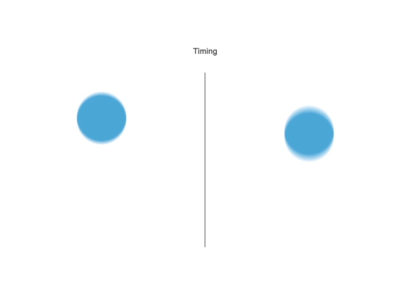

Timing, the ninth principle of animation, is the arguably the second most important next to Squash and Stretch.
Originally stated in the video above, "The personality and nature of an animation is greatly affected by the number of frames insterted between each main action." This is the basis of this principle. This principle is responsible for how fast certain actions in animation are, which controls how the action should be percieved.

As you can see, how fast an animation is greatly impacts the nature of the animation.
The ball on the left appears to be more floaty, light, and bouncy, while the ball on the right appears to be more heavy and stiff. You can infer all of this just from how fast the animation is, which is the basis of the principle Timing.
How you control how fast an animation is, is how many frames you make the animation last.
If you wanted something to move slowly, you would put many frames in between each main action. But, if you wanted something to move fast, you would put minimal frames in between each action. Refering to the video to the far left, animating a slow movement would be more efficient by holding on each frame for a moment.